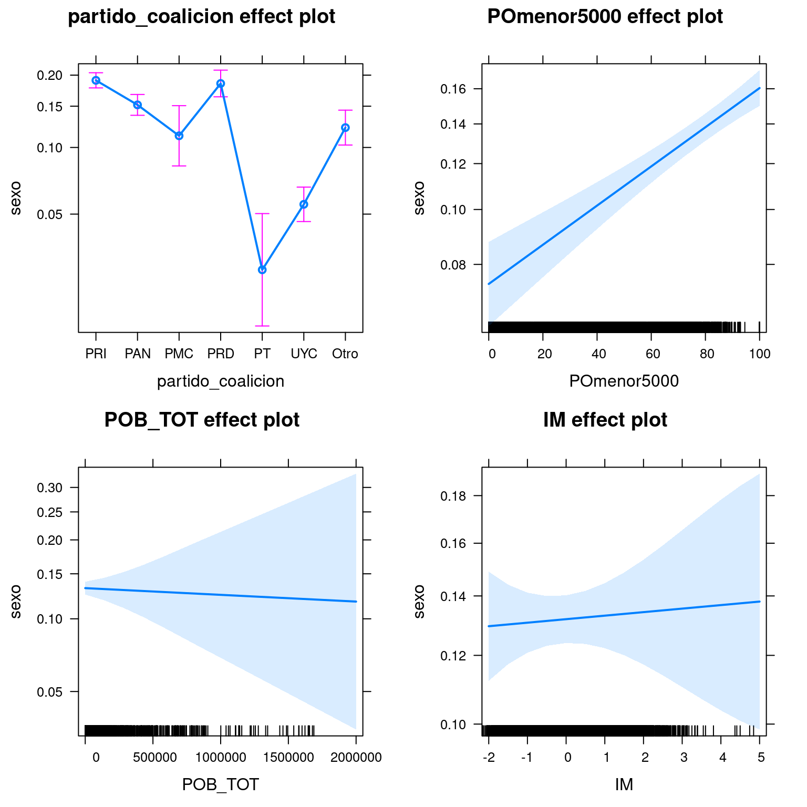

Capítulo 7 Modelos lineales generalizados
7.1 Introducción.
Los modelos lineales nos permiten predecir el valor de una variable a partir del valor de otra u otras. En su formulación original se desarrollaron para variables dependientes continuas, es decir, para estimar los valores que toma y para cada valor de x a partir de una ordenada al origen y una o más pendientes. Sin embargo puede ser de interés tomar como variables dependiente a una categórica y eso es lo que hacen los modelos logit, también conocidos como regresión logística. Claro que no es muy útil predecir cualquier valor de \(y\) dadas \(x_1\), \(x_2\), \(x_n\), dado que \(y_{categórica}\) solamente puede adquirir dos valores, 0 y 1. Lo que buscaremos predecir son las probabilidades de 0 o 1. Es decir, dado cierto valor de \(x\) ¿cuál es la probabilidad de \(y_0\) y de \(y_1\)? Podríamos simplificarnos la tarea y ajustar sin modificaciones un modelo lineal con la forma de la ecuación 1.
- \(y=\beta_0+\beta_1x+...\beta_ix\)
Le pediríamos al modelo que predijera 0 o 1, al fin y al los podríamos considerar valores numéricos e interpretar adecuadamente. Sin embargo estaríamos violando los supuestos de un modelo lineal: la distribución de probabilidad de y categórica no es normal. Sin embargo no todo está perdido. Si y no se ajusta a una distribución normal se puede ajustar a otras distribuciones y, para y dicotómica, podemos asumir que se ajusta a una distribución binomial. En ese caso podemos usar la ecuación (2)
- \(ln(\frac{p_1}{1-p_1})=\beta_0+\beta_1x+...\beta_ix\)
El lado derecho es igual de cualquier modelo lineal, pero el lado izquierdo tiene peculiaridades que vale la pena comentar. Como mencionamos, ya no buscamos al valor de \(y\) como una combinación lineal de los valores de \(x_1...X_i\). Lo que buscamos es el logaritmo de las razones de probabilidad de \(y=1\), que obtenemos dividiendo las probabilidades 1 por la probabilidad de 0.34 El Anexo I. Probabilidades y razones de probabilidad. desarrolla algunas propiedades de las razones de probabilidad.
7.2 Ajuste de modelos logit con glm()
Los modelos logit forman parte de lo que conocemos como Modelos Lineales Generalizados. Utilizamos la expresión generalizados porque son un marco general dentro del que caben casos particulares. Los modelos lineales con y continua son un caso particular de los generalizados: aquellos con una distribución normal y una función de enlace directa35. Los modelos logit son un caso particular de los modelos lineales generalizados en los que la distribución es binomial y la función de enlace el logaritmo de las razones de probabilidad, es decir, la función logit que les da nombre.
La función glm() de R nos permite ajustar modelos lineales de muchos tipos, incluyendo los que ajustamos con lm(), modelos de Poisson y los logit en los que nos enfocaremos.
La sintaxis básica para obtener un modelo lineal es glm(dependiente~independiente1+independiente2, family=binomial(), data=datos").
El primer argumento es un objeto de la clase fórmula. A la izquierda del signo ~ ubicamos a la variable dependiente y a la derecha, unidos por el signo + las independientes, si no estamos especificando una interacción entre variables.
El segundo, family=binomial(), especifica la función de probabilidad que utilizaremos. Para modelos logit es una función binomial. Dentro de los paréntesis se puede especificar la función de enlace. Para la familia de distribuciones binomial glm() por defecto usa una función logit. Si nos interesa una función probit deberíamos especificar link=probit.
El tercero apunta a un data.frame en el que están los datos. Los nombres de columna del data.frame deben coincidir con las variables especificadas en la fórmula, aunque podría contener más variables que serán descartadas. En el caso de hacer previamente una manipulación de datos encadenada con el operador %>% usamos . como sustituto anónimo de los datos.
7.2.1 Presentación de los datos.
Introduciremos una nueva base de datos y una hipótesis sustantiva para que nos sirva de guía. La base elaborada por el Sistema de Información Municipal del Instituto Nacional para el Federalismo y el Desarrollo Municipal tiene información sobre los presidentes municipales de México, incluyendo el sexo, partido y título. Como incluye el número de municipio y entidad federativa podemos combinar esta base de datos con la de CONAPO para agregar más variables. La base de datos tienen algunos problemas que requieren manipulación y que hemos atendido en otra parte(AGREGAR EL ENLACE). Trabajaremos con la base ya limpia, con una N=1881. Queremos explorar qué variables explican que un municipio tenga presidente o presidenta municipal. Nuestra primer hipótesis es que el partido político es una buena variable explicativa, considerando que los partidos progresistas son más propensos a apoyar candidaturas femeninas. Sin embargo otras variables podrían intervenir: la ruralidad/urbanidad del municipio, el Grado de Marginación, la región, etc.
Las variables que consideraremos son las siguientes:
| Variable | Descripción |
|---|---|
| sexo | Sexo del presidente o presidenta municipal (H o M)36 |
| POmenor5000 | % De población que vive en localidades de menos de 5000 habitantes. Proxy de ruralidad. |
| partido_coalición | Partido gobernante o cabeza de coalición gobernante. |
| POB_TOT | Población total del municipio. |
| IM | Índice de Marginación. |
7.2.1.1 Desciptivos de la base de datos.
| sexo | partido_coalicion | POB_TOT |
|---|---|---|
| H :10710 | PRI :4245 | Min. : 87 |
| M : 1805 | PAN :2713 | 1st Qu.: 4066 |
| presidente@jojutla.gob.mx: 6 | UYC :2106 | Median : 11862 |
| PRD :1390 | Mean : 36834 | |
| Otro :1175 | 3rd Qu.: 27822 | |
| (Other): 850 | Max. :1688258 | |
| NA’s : 42 |
| IM | POmenor5000 |
|---|---|
| Min. :-2.440000 | Min. : 0.00 |
| 1st Qu.:-0.727000 | 1st Qu.: 44.80 |
| Median :-0.058000 | Median :100.00 |
| Mean :-0.001275 | Mean : 73.74 |
| 3rd Qu.: 0.632000 | 3rd Qu.:100.00 |
| Max. : 4.845000 | Max. :100.00 |
| NA’s :2080 |
7.2.2 Un modelo lineal con glm()
7.2.3 La ordenada al origen de un modelo logit.
Para introducirnos al ajuste e interpretación de los coeficientes de los modelos logit comenzaremos por el más simple de todos: uno que no tiene variables predictoras. Por el momento no nos preocuparemos por las pruebas de hipótesis y los estadísticos de ajuste, sólo consideraremos los coeficientes.
La formula en R para este de ordenada al origen modelo es sexo~1, es decir, utilizamos solamente el lado izquierdo y del lado derecho ubicamos la constante 1. El único coeficiente que estimaremos es el de la ordenada al origen: el logaritmo de la razón de probabilidad de \(y=1\). Para saber a qué se refiere \(y=1\) es necesario conocer cuál es la categoría de referencia de la variable, es decir, y=0.
En R las variables categóricas que utilizamos como dependientes en un modelo logit corresponden al tipo de datos factor. Un factor es, técnicamente, una variable numérica compuesta de enteros sucesivos a partir de 1. Cada entero es un nivel o categoría de la variable y está acompañado de una etiqueta que nos facilita recordar a qué categoría corresponde. Los modelos logit binomiales aceptan para las variables dicotómicas codificadas como 0 y 1, lo cuál podría ser problemático si, como numéricos, los factores comienzan con 1. Como la estructura del tipo de datos factor es conocida las funciones que estiman modelos logit convierten internamente a la variable categórica/factor en una variable codificada como 0/1. No es necesario recodificar la variable o convertirla en dummy, esto se procesa de manera transparente para el usuario. Usando la función levels() podemos consultar los niveles o categorías de un factor e identificar al nivel 1, que será el nivel de referencia en el modelo, es decir, \(y=0\). Para variable dicotómicas el nivel 2 del factor equivale a \(y=1\).
Veamos cuales son los valores de y para la variable sexo del conjunto de datos:
## [1] "H" "M"
## [3] "presidente@jojutla.gob.mx"## # A tibble: 1 x 2
## sexo partido_coalicion
## <chr> <chr>
## 1 H PRIy=0 es hombre y y=1 es mujer. Entonces el modelo de la ordenada al origen nos reportará el logaritmo de la razón de probabilidad de que un municipio esté gobernado por una mujer.
#Modelo logit sin variables independientes
presidentes %>%
glm(sexo~1, family=binomial(), data=.) ->molige1
molige1##
## Call: glm(formula = sexo ~ 1, family = binomial(), data = .)
##
## Coefficients:
## (Intercept)
## -1.777
##
## Degrees of Freedom: 12520 Total (i.e. Null); 12520 Residual
## Null Deviance: 10350
## Residual Deviance: 10350 AIC: 10350La constante para la variable dependiente (Intercept) es -1.735
¿Qué significa ese número? De manera directa que el logaritmo de la razón de probabilidad de \(y=1\) es -1.735. Sin embargo interpretar un logaritmo de razón de probabilidad no es lo más intuitivo. Al menos por el signo negativo sabemos que la probabilidad de \(y=1\) es menor a la de \(y=0\): hay menos mujeres presidentas municipales que hombres. Para hacer más intuitiva la interpretación podemos desandar el camino de la función de enlace de la ecuación (2). El primer paso es quitar el logaritmo y convertir al coeficiente en una razón de probabilidad: exponenciar el logaritmo. En R lo hacemos con la función exp(), que nos regresa el exponencial de un logaritmo. El exponencial de -1.735 es 0.176, redondeado. Por cada presidente municipal hay 0.176 presidentas o, lo que es lo mismo, hay 5.67 presidentes municipales por cada presidenta.
¿De dónde salió? Sobre 1881 presidentes municipales 282 son mujeres y 1599 hombres. Por lo tanto la probabilidad de presidenta municipal es 282/1881, es decir, 0.1499. Utilizando el lado derecho de la ecuación (2) podemos convertir a esta probabilidad en una razón de probabilidad: con \(p1=0.1499\), \(p1/(1-p1)=0.1499/(1-0.1499)=0.176\): aquí está nuestra razón de probabilidad, cuyo logaritmo es -1.735, el coeficiente que reportó el modelo.
| H | M | presidente@jojutla.gob.mx | |
|---|---|---|---|
| y= | 0 | 1 | 0 |
| Conteos | 10710 | 1805 | 6 |
| Probabilidades | 0.8554 | 0.1442 | 0.8554 |
| Razón de probabilidad | 1 | 0.1684 | 1 |
| Logaritmo RP | 0 | -1.781 | 0 |
7.2.4 Estimación de \(\beta_1\)
El segundo modelo que ajustaremos incluye una variable independiente, a la que simplificaremos para facilitar la exposición. Esta variable es dicotómica y refiere al partido político: tendrá valor 0 si el partido es el PRI y valor 1 si es otro.
presidentes %>%
mutate(partido_coalicion=fct_lump(partido_coalicion, 1, other_level="Otro")) %>%
glm(sexo~partido_coalicion, family=binomial(), data=.) ->molige2
molige2##
## Call: glm(formula = sexo ~ partido_coalicion, family = binomial(),
## data = .)
##
## Coefficients:
## (Intercept) partido_coalicionOtro
## -1.4432 -0.5356
##
## Degrees of Freedom: 12478 Total (i.e. Null); 12477 Residual
## (42 observations deleted due to missingness)
## Null Deviance: 10340
## Residual Deviance: 10230 AIC: 10230## (Intercept) partido_coalicionOtro
## 0.2361677 0.5853302La salida de glm() incluye ahora un segundo coeficiente, llamado partido_coalicionOtro. Ese coeficiente es el logaritmo de la razón de probabilidad de presidenta municipal cuando el partido gobernante en el municipio no es el PRI. La pendiente negativa de \(\beta_1\) nos indica que, cuando gobierna otro partido, las probabilidades de presidenta municipal bajan.
Podríamos obtener este mismo coeficiente a través de una tabla de contingencia y… vamos a hacerlo.
| PRI | Otro | |
|---|---|---|
| y= | 0 | 1 |
| 1 | 3434 | 7240 |
| 2 | 811 | 994 |
| pH | 0.809 | 0.8793 |
| pM | 0.191 | 0.1207 |
| Razón de probalidad presidenta | 0.2362 | 0.1373 |
| RP presidenta Otro | 1 | 0.5813 |
| log(RP presidenta Otro) | 0 | -0.5424 |
¿Cuál es la probabilidad de ser presidenta municipal cuando el partido es el PRI? 154/687, es decir, el número de mujeres entre todos los presidentes y presidentas municipales tricolores. Esto equivale a 0.224163. Cuando es otro partido es 0.1405049, 128 presidentas sobre un total 911. Entonces podemos calcular la razón de probabilidad de presidenta para Otro partido vs el PRI: 0.1405049/0.224163, que es igual 0.626798, cuyo logaritmo es -0.4671309, el coeficiente que nos regresó el modelo.
7.2.5 Modelo logit con dos variables independientes.
En el Modelo 2 estimamos el cambio en el logaritmo de la razón de probabilidad de la variable sexo a medida que cambia el partido político y encontramos que las probabilidades de presidenta municipal bajan cuando el partido gobernante no es el PRI. Sin embargo es posible que el PRI no sea la variable explicativa y que tengamos alguna variable confusora que nos está generando problemas. Pensemos en una hipótesis: el PRI gobierna muchos municipios rurales y quizás los municipios rurales sean más propensos a elegir presidentas que presidentes. En este caso la ruralidad sería una variable confusora, nos confunde haciéndonos creer que el PRI es una variable efectiva para explicar la probabilidad presidenta municipal, cuando en realidad es ella –la ruralidad– la que explica ambas: que el gobierno esté encabezado por una mujer y que esté encabezado por el PRI. Los modelos logit nos permiten controlar este tipo de situaciones y estimar los valores de \(\beta_1\) descontando el efecto de los demás predictores. Si la hipótesis de la ruralidad como confusora es correcta agregando al modelo una medida de ruralidad, el efecto del PRI sobre la probabilidad de presidenta municipal debería desaparecer.
Nótese que incluiremos del lado derecho tanto predictores categóricos como continuos. La interpretación de los predictores continuos es similar a la de los categóricos, aunque debemos tener en consideración su escala, ya que no varían entre 0 y 1 sino que adquieren más variados. El coeficiente \(\beta\) para una variable continua indica el cambio en el logaritmo de la razón de probabilidad de y por cada incremento de una unidad de la variable continua. Profundizaremos este punto cuando interpretemos el Modelo 3.
La formula que utilizaremos es sexo~partido_coalicion+POmenor5000. Expresaremos los coeficientes redondeados, de lo contrario R nos los regresa en notación científica.
presidentes %>%
mutate(partido_coalicion=fct_lump(partido_coalicion, 1, other_level="Otro")) %>%
glm(sexo~partido_coalicion+POmenor5000, family=binomial(), data=.) -> molige3
round(coef(molige3), 6)## (Intercept) partido_coalicionOtro POmenor5000
## -1.915734 -0.564728 0.006455El coeficiente correspondiente a POmenor5000 es 0.006491, que interpretamos de la siguiente manera: por cada unidad porcentual de adicional de población viviendo en localidades menores a 5000 habitantes el logaritmo de la razón de probabilidad de presidenta municipal aumenta 0.0006491. Más adelante veremos maneras menos rebuscadas de comunicar estos resultados, por ahora consideremos que nuestra hipótesis de la ruralidad tiene algo de evidencia a favor: la probabilidad de presidenta municipal aumenta con la ruralidad, medida de esta manera un tanto brusca. ¿Es el efecto de la ruralidad suficiente para hacer desaparecer el efecto del PRI vs Otros? No, los demás partidos mantienen una probabilidad de presidenta menor a la del PRI.
7.2.6 Modelo logit con múltiples variables dependientes.
Otra hipótesis sustantiva que podemos considerar es que no es la ruralidad, sino el Índice de Marginación la confusora. Iremos más allá y propondremos un modelo más sofisticado que incluye otras variables que controlaremos: población total del municipio, Índice de Marginación y región. Para hacer más granular la hipótesis partidaria incluiremos más partidos, un total de 6: PRI, PAN, PRD, PVEM, PMC, PT y Otros, a los que controlaremos por ruralidad, población total e Índice de marginación. Al cambiar la codificación de la variable partido_coalición el modelo 4 ya no será directamente comparable con los 3 anteriores, es decir, ya no serán modelos anidados.
presidentes %>%
glm(sexo~partido_coalicion+POmenor5000+POB_TOT+IM, family=binomial(), data=.) -> molige4
round(coef(molige4), 6)## (Intercept) partido_coalicionPAN partido_coalicionPMC
## -2.087105 -0.275089 -0.621649
## partido_coalicionPRD partido_coalicionPT partido_coalicionUYC
## -0.035204 -2.123981 -1.390042
## partido_coalicionOtro POmenor5000 POB_TOT
## -0.529843 0.008744 0.000000
## IM
## 0.010489El primer dato interesante es que hay un partido con una probabilidad de presidenta todavía más alta que la del PRI: el Verde Ecologista.37 Controlando por población, ruralidad e Índice de Marginación PRI y PVEM tienen probabilidades más altas de presidenta. Asimismo encontramos que, por cada punto de incremento de IM \(log(\frac{p_{presidenta}}{(1-p_{presidenta})}\) aumenta 0.032. Si bien los resultados no son concluyentes. Deberíamos incorporar algunas hipótesis sustantivas orientadas a explicar la prevalencia de presidentas municipales, por no hablar del mecanismo que hace el PRI y PVEM sean buenos predictores de presidentas municipales. Los coeficientes sin un marco de hipótesis sustantivas no tienen mucha capacidad explicativa, en este caso nuestro análisis se limita a la descripción orientada por algunas hipótesis generales. De todos modo con este modelo podríamos concluir que el partido es relevante para explicar si a un municipio lo gobierna un hombre o una mujer, una correlación interesante que valdría la pena seguir investigando.
7.2.7 Pruebas de significancia.
Hasta ahora hemos tratado a los coeficientes como si fueran un parámetro: el verdadero valor de la pendiente, suficientemente informativo por sí mismo. Sin embargo no son parámetros, son estimaciones y, como tales, no son completamente precisas. En sentido estricto son el centro de una distribución de probabilidades de coeficientes, el valor más probable, pero no el único posible. Cuan dispersa es esa distribución nos lo indica el error estándar: cuanto mayor el error más dispersos estarán los coeficientes, cuanto menor, menos dispersos. Todos los coeficientes estimados del modelo cuatro son numéricamente distintos de 0: aparentemente tienen un efecto sobre la probabilidad de presidenta. Pero si los consideramos el centro de una distribución de coeficientes deberíamos contemplar la posibilidad –probabilidad– de que el verdadero coeficiente fuera otro, quizás 0. Para minimizar la posibilidad de tratar como un valor distinto de cero a un coeficiente que lo es deberíamos realizar una prueba de hipótesis. En ella que comparamos a los coeficientes obtenidos en el Modelo 4 con unos coeficientes hipotéticos iguales a 0.
7.2.7.1 Estimación manual de la Prueba de Wald. (wonkish)
En modelos logit la prueba de hipótesis que se lleva a cabo para contrastar la hipótesis de que los coeficientes son diferentes de 0 es la prueba de Wald, que estima un estadístico \(\theta\) o z de cada coeficiente, a diferencia del estadístico t que ocupamos en los modelos lineales con distribución gaussiana y enlace directo. El estadístico z se obtiene dividiendo al estimado entre el error estándar. Este valor z nos indica el valor del coeficiente normalizado, es decir, denrto una distribución de probabilidad normal con media 0 y desviación estándar 1.38 Cuanto más cercano a 0 el valor z, menos probable que sea diferente de 0. Para saber cuál es esa probabilidad calculamos la función de densidad para ese valor en una distribución normal: ese es nuestro p-value. Cuanto más bajo el p-value menor es la probabilidad de obtener nuestro coeficiente dada la hipótesis de nulidad.
#Estimación de la prueba de Wald en tres pasos.
#Paso 1. Extraer los coeficientes y los errores estandar del Modelo 4.
summary(molige4)$coefficients[,1] #Subconjunto de la lista coeficientes, columna 1: estimados## (Intercept) partido_coalicionPAN partido_coalicionPMC
## -2.087105e+00 -2.750888e-01 -6.216494e-01
## partido_coalicionPRD partido_coalicionPT partido_coalicionUYC
## -3.520428e-02 -2.123981e+00 -1.390042e+00
## partido_coalicionOtro POmenor5000 POB_TOT
## -5.298428e-01 8.744226e-03 -6.909974e-08
## IM
## 1.048922e-02summary(molige4)$coefficients[,2] #Subconjunto de la lista coeficientes, columna 2: errores estandar## (Intercept) partido_coalicionPAN partido_coalicionPMC
## 1.051732e-01 7.329305e-02 1.776745e-01
## partido_coalicionPRD partido_coalicionPT partido_coalicionUYC
## 8.779994e-02 3.242491e-01 1.076144e-01
## partido_coalicionOtro POmenor5000 POB_TOT
## 1.088661e-01 1.170809e-03 3.412913e-07
## IM
## 3.840605e-02## (Intercept) partido_coalicionPAN partido_coalicionPMC
## -19.8444697 -3.7532729 -3.4988116
## partido_coalicionPRD partido_coalicionPT partido_coalicionUYC
## -0.4009602 -6.5504605 -12.9168830
## partido_coalicionOtro POmenor5000 POB_TOT
## -4.8669196 7.4685332 -0.2024656
## IM
## 0.2731138#Estimar la probilidad de z en una distribución normal con media 0 y sigma 1.
p <- (1 - pnorm(abs(z), 0, 1)) * 2 #Usamos pnorm() para estimar la probabilidad, dado que es una función de prob acumulada usamos 1-pnorm()
p## (Intercept) partido_coalicionPAN partido_coalicionPMC
## 0.000000e+00 1.745406e-04 4.673367e-04
## partido_coalicionPRD partido_coalicionPT partido_coalicionUYC
## 6.884494e-01 5.735989e-11 0.000000e+00
## partido_coalicionOtro POmenor5000 POB_TOT
## 1.133511e-06 8.104628e-14 8.395528e-01
## IM
## 7.847657e-017.2.7.2 Demostración gráfica de la prueba de Wald para partido_PVEM

(#fig:grafico_wald, )Prueba de Wald para dos coeficientes
No es necesario que hagamos esta prueba cada vez y por separado, el sumario de los modelos lineales generalizados nos presenta los resultados de esa prueba de hipótesis. El p-value de la prueba de Wald nos indica la probabilidad de obtener unos coeficientes como los nuestros dada la hipótesis de nulidad H0 según la cuál los coeficientes verdaderos son 0. Si esa probabilidad es muy baja podemos rechazar la hipótesis de nulidad y considerar que nuestros coeficientes son diferentes de 0. Por supuesto, podríamos hacer una prueba de hipótesis con una H0 diferente, por ejemplo, contra la hipótesis de que el verdadero es 2.
Obtenemos el sumario de un modelo con la función genérica summary(). Observemos la quinta columna del sumario, que reporta los p-value que especificamos en el párrafo anterior.
##
## Call:
## glm(formula = sexo ~ partido_coalicion + POmenor5000 + POB_TOT +
## IM, family = binomial(), data = .)
##
## Deviance Residuals:
## Min 1Q Median 3Q Max
## -0.7370 -0.6380 -0.5132 -0.3790 2.5971
##
## Coefficients:
## Estimate Std. Error z value Pr(>|z|)
## (Intercept) -2.087e+00 1.052e-01 -19.844 < 2e-16 ***
## partido_coalicionPAN -2.751e-01 7.329e-02 -3.753 0.000175 ***
## partido_coalicionPMC -6.216e-01 1.777e-01 -3.499 0.000467 ***
## partido_coalicionPRD -3.520e-02 8.780e-02 -0.401 0.688449
## partido_coalicionPT -2.124e+00 3.242e-01 -6.550 5.74e-11 ***
## partido_coalicionUYC -1.390e+00 1.076e-01 -12.917 < 2e-16 ***
## partido_coalicionOtro -5.298e-01 1.089e-01 -4.867 1.13e-06 ***
## POmenor5000 8.744e-03 1.171e-03 7.469 8.11e-14 ***
## POB_TOT -6.910e-08 3.413e-07 -0.202 0.839553
## IM 1.049e-02 3.841e-02 0.273 0.784766
## ---
## Signif. codes: 0 '***' 0.001 '**' 0.01 '*' 0.05 '.' 0.1 ' ' 1
##
## (Dispersion parameter for binomial family taken to be 1)
##
## Null deviance: 8622.4 on 10405 degrees of freedom
## Residual deviance: 8285.8 on 10396 degrees of freedom
## (2115 observations deleted due to missingness)
## AIC: 8305.8
##
## Number of Fisher Scoring iterations: 6La probabilidad de obtener los coeficientes del Modelo 4 dada la hipótesis de que el verdadero coeficiente es 0 es baja en todos los casos, excepto para el IM. En este caso el p-value es 0.6922, es decir, es muy probable que una distribución al azar de coeficientes con media 0 produzca el coeficiente que estimó el modelo. Concluimos que no es significativamente diferente de 0 y que el IM no tiene un efecto sobre la probabilidad de presidenta. Presidentes y presidentas se distribuyen de manera independiente al Índice de Marginación de un municipio. Para una discusión sobre las pruebas de hipótesis vea el Anexo II. Asterisco sobre los asteriscos.
¿Qué hay de los modelos anteriores? Para facilitar la comparación los reportaremos en una tabla formateada, usando la función htmlreg() del paquete texreg(). Esta función recibe una lista de modelos y nos regresa una tabla formateda con esos modelos. Para salidas en consola utilizamos screenreg() y texreg() para tablas formateadas en \(\LaTeX\).
| Model 1 | Model 2 | Model 3 | ||
|---|---|---|---|---|
| (Intercept) | -1.78*** | -1.44*** | -1.92*** | |
| (0.03) | (0.04) | (0.08) | ||
| partido_coalicionOtro | -0.54*** | -0.56*** | ||
| (0.05) | (0.06) | |||
| POmenor5000 | 0.01*** | |||
| (0.00) | ||||
| AIC | 10351.67 | 10234.77 | 8484.95 | |
| BIC | 10359.11 | 10249.63 | 8506.70 | |
| Log Likelihood | -5174.84 | -5115.38 | -4239.48 | |
| Deviance | 10349.67 | 10230.77 | 8478.95 | |
| Num. obs. | 12521 | 12479 | 10406 | |
| p < 0.001, p < 0.01, p < 0.05 | ||||
7.3 Presentación de resultados.
7.3.1 Intervalos de confianza.
Otra forma de presentar los coeficientes estimados por el modelo dando cuenta del error de estimación es presentar un intervalo, en lugar de una estimación puntual. Estos intervalos dan cuenta del error haciéndose más extensos a medida que el error es más grande. Se estiman a partir de un nivel de confianza, generalmente 90, 95 o 99%.
En R los obtenemos con la función confint(), que lleva como primer argumento el nombre del modelo de que queremos extrae los intervalos de confianza. Por defecto los calcula con una confianza del 95%, aunque los podemos especificar con el argumento level=confianza, donde confianza es un número mayor que 0 y menor que 1.
## 2.5 % 97.5 %
## (Intercept) -2.294849e+00 -1.882502e+00
## partido_coalicionPAN -4.195394e-01 -1.321575e-01
## partido_coalicionPMC -9.846693e-01 -2.862944e-01
## partido_coalicionPRD -2.089096e-01 1.354040e-01
## partido_coalicionPT -2.827740e+00 -1.543170e+00
## partido_coalicionUYC -1.604854e+00 -1.182686e+00
## partido_coalicionOtro -7.472939e-01 -3.201832e-01
## POmenor5000 6.459762e-03 1.104996e-02
## POB_TOT -7.866624e-07 5.576079e-07
## IM -6.501523e-02 8.555638e-02## 0.5 % 99.5 %
## (Intercept) 0.09434380 0.1622165
## partido_coalicionPAN 0.62795893 0.9161989
## partido_coalicionPMC 0.33106892 0.8304749
## partido_coalicionPRD 0.76781916 1.2073660
## partido_coalicionPT 0.04589185 0.2515411
## partido_coalicionUYC 0.18748613 0.3266335
## partido_coalicionOtro 0.44157562 0.7743408
## POmenor5000 1.00576252 1.0118489
## POB_TOT 0.99999897 1.0000007
## IM 0.91499099 1.11523517.3.2 Gráfico de coeficientes.
A partir de los intervalos de confianza de los coeficientes se puede obtener una salida gráfica de la estimación del modelo, que es especialmente útil para ubicar las pendientes relativas de cada predictor. No es difícil hacer el gráfico nosotros mimos, pero la función coefplot::coeffplot() grafica directamente los coeficientes y regresa un objeto de la clase ggplot2, por lo que podemos personalizar el estilo visual, sin alterar el contenido. La sintaxis es coefplot(modelo), donde modelo es un objeto de la clase glm.
library(coefplot)
coefplot(molige4) +
theme_minimal() +
labs(title="Estimación de coeficientes con error estandar",
x="Estimación",
y="Variable",
caption="Elaboración propia con datos del SNIM y CONAPO")Figure 7.1: Efecto de algunas variables sobre la probabilidad de presidenta municipal
En el gráfico podemos ver que, dentro del intervalo marcado por el error estandar, IM está sobre la línea que marca el valor 0. POB_TOT y POmenor5000 parecen estar cerca, pero sin tocar la línea. Definitivamente necesitaremos consultar la tabla para tener identificar la significancia de esos coeficientes. La constante u ordenada al origen es puramente teórica: señala el logaritmo de la razón de probabilidad de presidenta en un municipio gobernado por el PRI con 0% de población en localidades de menos de 5000 habitantes, 0 habitantes y 0 Índice de Marginación. No tiene una interpretación sustantiva.
7.3.3 Tabla y gráfico de efectos totales promedio.
La razón de probabilidad o el logaritmo de la razón de probabilidad con el que los modelos logit reportan los coeficientes son matemáticamente correctos, pero sinceramente no son la forma más intuitiva de dar cuenta de la magnitud del cambio de \(y\) cuando cambia \(x\). Sería mejor poder expresarlo como probabilidades directas o como variación en las probabilidades, más que en las razones de probabilidad. Como esto es R, hay una librería para eso, o mejor dicho 2. Para obtener los efectos promedio totales de unos coeficientes utilizamos la librería effects::, cortesía de John Fox39. effects:: incluye salidas en tabla y gráficas de los efectos absolutos de un predictor, incluyendo salidas para los errores. Para obtener los efectos marginales podemos usar mfx::.
La función effects::allEffects() produce una tabla con los efectos totales a partir de un modelo lineal. Es posible generar un gráfico de los efectos pasando el objeto resultante a la función plot. En este caso se presenta el efecto total y un intervalo de confianza del 95%. plot(allEffects)) genera un gráfico para cada predictor y, si es continuo, grafica la pendiente y si es categórico el efectos de cada categoría de la variable.
## model: sexo ~ partido_coalicion + POmenor5000 + POB_TOT + IM
##
## partido_coalicion effect
## partido_coalicion
## PRI PAN PMC PRD PT UYC
## 0.19079989 0.15188277 0.11239868 0.18542359 0.02741674 0.05546906
## Otro
## 0.12188882
##
## POmenor5000 effect
## POmenor5000
## 0 20 50 80 100
## 0.07381691 0.08670087 0.10985014 0.13824471 0.16042605
##
## POB_TOT effect
## POB_TOT
## 90 4e+05 8e+05 1e+06 2e+06
## 0.1321600 0.1290227 0.1259484 0.1244349 0.1170997
##
## IM effect
## IM
## -2 -0.6 1 3 5
## 0.1294827 0.1311469 0.1330711 0.1355100 0.1379864
7.3.4 Sumario de efectos marginales.
La función logitmfx() no recibe a un objeto de la clase glm, sino que requiere especificar el modelo dentro de la llamada. La sintaxis es similar a la de glm(): formula, datos. Es un poco más rudimentaria que effects(), pero es mejor que calcular manualmente los efectos marginales.
## dF/dx Std. Err. z P>|z|
## partido_coalicionPAN -0.029751 0.007475 -3.980170 0.000069
## partido_coalicionPMC -0.057428 0.012889 -4.455569 0.000008
## partido_coalicionPRD -0.003990 0.009850 -0.405040 0.685448
## partido_coalicionPT -0.120961 0.006982 -17.323601 0.000000
## partido_coalicionUYC -0.115446 0.006145 -18.785689 0.000000
## partido_coalicionOtro -0.051763 0.008945 -5.787085 0.000000
## POmenor5000 0.001001 0.000133 7.534709 0.000000
## POB_TOT 0.000000 0.000000 -0.202469 0.839550
## IM 0.001201 0.004397 0.273116 0.7847647.4 Modelos ligit multinomiales.
Otro caso de los modelos lineales generalizados son los modelos logit multinomiales. Los logit binomiales nos sirven para modelar una variable dependiente categórica dicotómica, pero podría interesarnos modelar una salida politómica, es decir, una categórica con más de dos niveles.
La función glm() no tiene directamente la capacidad de ajustar este tipo de modelos, aunque es posible hacerlo como un tipo especial de regresión de Poisson. Sin embargo, esto requiere mucho trabajo previo de adecuación de los datos. La función nnet:multinom() facilita las cosas, pues conserva una sintaxis similar a la de glm() y ajusta rápidamente modelos logit multinomiales.40
La salida de un modelo logit multinomial es similar a la de uno binomial, pero como podemos esperar hay más información, que no estamos modelando solamente el evento \(y=1\), también \(y=2, y=3, ..., y=k\). Los coeficientes se dividen en más tablas.
7.4.1 Ajuste de modelos logit multinomiales com multinom()
La sintaxis básica es multinom(formula, data=datos). El primer término de la formula puede ser un factor con dos o más niveles y del lado derecho podemos incluir tanto factores como predictores continuos.
Para este ejemplo tomaremos como variable dependiente partido_coalicion, una categórica politómica con 6 niveles. La modelaremos como un combinación lineal de la población en localidades de menos de 5000 habitantes, el Índice de Marginación y el sexo del presidente/presidenta municipal. Las dos primeras son contínuas y la útlima categórica: no hay problema, estarán del lado derecho de la fórmula donde se acepta cualquier tipo de variable.
## # weights: 35 (24 variable)
## initial value 24283.012750
## iter 10 value 20886.932682
## iter 20 value 20226.106858
## final value 20098.862521
## converged## Call:
## multinom(formula = partido_coalicion ~ IM + sexo, data = presidentes)
##
## Coefficients:
## (Intercept) IM sexoM sexopresidente@jojutla.gob.mx
## PAN -0.4087424 -0.04840464 -0.28689308 -2.3997246
## PMC -2.2596733 -0.30311605 -0.68368847 -0.5912868
## PRD -1.0805087 0.22067794 -0.08332861 -1.0594274
## PT -2.1328638 0.36767543 -2.11525625 -0.2764507
## UYC -0.8600331 1.12843922 -1.34289961 -0.4477473
## Otro -1.1803124 0.10106826 -0.63339985 8.6250570
##
## Std. Errors:
## (Intercept) IM sexoM sexopresidente@jojutla.gob.mx
## PAN 0.02769053 0.02811841 0.06663277 64.79842
## PMC 0.05864056 0.05982938 0.16246283 57.20324
## PRD 0.03445774 0.03451580 0.07987520 55.29426
## PT 0.05331588 0.05681811 0.29607649 68.13464
## UYC 0.03397561 0.03271269 0.10054188 62.60279
## Otro 0.03587259 0.03725668 0.10050886 15.89222
##
## Residual Deviance: 40197.73
## AIC: 40245.73El sumario nos presenta por separado a los coeficientes y errores estándar. Los coeficientes se interpretan de igual modo que en un logit binomial: son el logaritmo de la razón de probabilidad de \(y=k\) cuando cambia \(x\). Para cada nivel de la variable dependiente, excepto el de referencia, se presenta una fila en la tabla. Las columnas ordenan a las variables idenpendientes y a la ordenada al orígen.
En tabla aparte se reportan los errores estándar de cada coeficiente. multinom() no calcula los estadísticos z y los p-value de la prueba de Wald, aunque podemos calcularlos facilmente usando el procedimiento del apartado 2.6.1.
7.5 Anexo I. Probabilidades y razones de probabilidad.
El momio tiene razones, que la razón desconoce.
Las razones de probabilidad, también llamadas razones de momio o odds ratio, se obtienen dividiendo la probabilidad de éxito por la de fracaso. En el contexto de los modelos logit binomiales entendemos como éxito a \(y=1\) y a \(y=0\) como probabilidad de fracaso. Como \(y\) tiene sólo dos categorías podemos obtenerlos usando \(RP_{y=1}=\frac{p_{y=1}}{1-p_{y=1}}\). Son una transformación de la probabilidad usuales, que varían entre 0 y 1, pero en lugar de eso varían entre 0 y una repetición infinita de números 9. Si bien la razón de probabilidad se expresa con un solo número tiene una referencia implícita que es el 1. Una razón de probabilidad 1 significa que ambos eventos tienen la misma probabilidad: la obtuvimos dividiendo 0.5 entre 0.5 Una razón de probabilidad mayor que 1 significa que el evento éxito es más probable que el evento fracaso y menor que 1 lo inverso.
| fila | p0 | p1 | RP 1 |
|---|---|---|---|
| 1 | 0.1 | 0.9 | 9.0000000 |
| 2 | 0.2 | 0.8 | 4.0000000 |
| 3 | 0.3 | 0.7 | 2.3333333 |
| 4 | 0.4 | 0.6 | 1.5000000 |
| 5 | 0.5 | 0.5 | 1.0000000 |
| 6 | 0.6 | 0.4 | 0.6666667 |
| 7 | 0.3 | 0.7 | 2.3333333 |
| 8 | 0.2 | 0.8 | 4.0000000 |
| 9 | 0.1 | 0.9 | 9.0000000 |
La razón de probabilidad nos da una magnitud de cuanto más probable es un evento que otro. En la cuarta fila de la Tabla 1 encontramos que el evento 1 tiene una razón de probabilidad de 1.5. Esto significa que es un 50% más probable obtener 1 que obtener 0. En la sexta fila la razón de probabilidad de 1 es 0.666: obtener 1 es un 66% menos probable que obtener 0.
Los coeficientes de los modelos logit no se reportan como razones de probabilidad, sino como logaritmos de las razones de probabilidad. Aunque son más difíciles de interpretar que las razones de probabilidad tienen una ventaja: probabilidades iguales se expresan con el 0, una probabilidad superior del evento éxito con un número positivo y una menor con un número negativo. Es decir, permiten una interpretación rápida y simple de las pendients.
Para pasar del logaritmo de la razón a probabilidad a la razón de probabilidad exponenciamos los coeficientes y$. En R utilizamos la función exp(), que nos regresa el exponencial de los datos numéricos que le pasemos.
7.6 Anexo II. Asterisco sobre los asteriscos.
En el contextos de los modelos logit –y en todos los demás– debemos tener muy claro qué hacemos cuando hacemos una prueba de hipótesis y qué interpretación podemos realizar del mismo. En este caso se estima la probabilidad de obtener unos coeficientes como el que obtuvimos en una hipotética distribución de coeficientes que tiene como centro al 0 y una desviación similar a la de nuestros coeficientes. Si esa probabilidad es muy baja podemos rechazar \(H_0\), la hipótesis de nulidad que sostiene que el verdadero es 0. Hay un criterio establecido para interpretar que significa muy baja. Cuando el p-value es menor a 0.01 se considera que hay mucha evidencia en contra de la hipótesis de nulidad: hay una probabilidad de del 1% de que el verdadero valor sea 0. Esto suele expresarse con tres asteriscos (***) al lado del p-value. Cuando es menor a 0.05 (**) también podemos rechazar la hipótesis de nulidad, pero aceptando un poco más de incertidumbre: hay una probabilidad del 5% de que una distribución de coeficientes centrada en el 0 contenga nuestros coeficientes y así con p-values todavía más altos. Las pruebas de hipótesis no eliminan la incertidumbre, en el mejor de los casos la cuantifican.
El p-value de la prueba de hipótesis depende de dos valores: el coeficiente y el error. Un p-value puede ser bajo –y, por lo tanto, el coeficiente estadísticamente significativo– porque es muy lejano a 0 y tiene un error relativamente bajo. O ser muy cercano a 0, pero al tener un error muy bajo ser significativamente distinto. Vale la pena revisar los coeficientes y el error. Quizás un coeficiente sea significativo por tener un error muy pequeño, pero sigue siendo cercano a cero: su efecto es distinguible, pero muy pequeño.
Consideremos al Modelo 4 y el coeficiente 0.0006491 para la variable POmenor5000. El p-value para ese coeficiente es 0.00264, sería razonable rechazar la hipótesis de nulidad y concluir que es diferente de 0. En este caso diríamos que la ruralidad tiene un efecto sobre la probabilidad de presidenta. Sin embargo ¿cuán tangible es ese efecto? En mi opinión, muy poco. La razón de probabilidad presidenta es 1.000649, es decir, por cada incremento de un 1% de población en localidades con menos de 5000 habitantes aumenta un 0.0006491 la razón de probabilidad de presidenta. ¿Cuanto aumentaría si, digamos, nos pasamos de 0% de población en localidades menores a un 50%? Podemos obtener este número elevando el exponencial de \(\beta\) al porcentaje que nos interesa. En este caso \(1.000649^{50}=1.032987\). Es decir, pasando del 0 al 50% de población en localidades con menos de 5000 habitantes la probabilidad de presidenta aumenta un 3.2%. Dependerá de nuestra hipótesis sustantiva determinar si es un cambio importante o no. A mí me sabe a poco: la ruralidad tiene un efecto significativo, pero es muy bajo. No sería sorprendente que replicando estos datos para otro ciclo electoral esta pendiente desaparezca o cambie de signo. Podría ser, perfectamente, ruido.
Consideremos algunas posibles interpretaciones erroneas de un p-value, es decir, que no es un p-value.
No es una magnitud que nos diga algo sobre la relación entre \(x\) y \(y\). Eso nos lo indica el coeficiente.
Un p-value bajo no significa que el coeficiente que estimó el modelo es el verdadero coeficiente. Solamente que podemos rechazar razonablemente la hipótesis de que está en una distribución centrada en 0. ¡El verdadero coeficiente podría ser todavía más alto!
No es la prueba definitiva de que nuestro coeficiente es diferente de 0. Las distribuciones de probabilidad son asintóticas, así que aún con un p-value extremadamente bajo sigue existiendo una probabilidad mayor que cero de que el verdadero coeficiente sea… 0.
No indica la cantidad de veces que debemos repetir el experimento –en este caso, modelar y obtener coeficientes para datos similares– hasta obtener un error. Un p-value de 0.05 no puede interpretarse sostiendo que cada 100 modelos sólo 5 reportarán un falso positivo: aceptar que el coeficiente es diferente de 0 cuando no lo es.
Un p-value no estima la probabilidad de que la hipótesis estadística \(H_1\) sea verdadera dados las datos. Hace todo lo contrario, estima la probabilidad de nuestros de datos dado \(H_0\).
7.7 Anexo III. Tipos de variables independiente y modelo lineal apropiado.
| Variable dependiente | Definición | Ejemplo | Tipo de modelo | Función en R |
|---|---|---|---|---|
| Continua | Dentro de un rango, puede adquirir infinitos valores numéricos | Ingreso en pesos MN | Lineal con mínimos cuadrados ordinarios | lm() |
| Categórica dicotómica | Restringida a dos valores no ordenados | Sexo, Rural/urbano, Votó/No votó | logit | glm(family=binomial()) |
| Categórica politómica | Más de dos categorías no ordenadas | Género, partido político, Grado de Marginación | multinom() |
|
| Conteo | Conteo de eventos cuyo universo de probabilidad no es conocido41 | Denuncias por violencia de género | Lineal de Poisson | glm(family=log()) |
| Proporción | y=0 y y=1 son proporciones que suman 1 | Composición parlamentaria: hombres y mujeres | Regresión beta | betareg() |
Como sabemos que la probabilidad de varía entre 0 y 1 entonces 1 menos la probabilidad de de 1 es igual a la probabilidad de 0.↩
Estimamos directamente el valor y.↩
Retomamos la codificación de la base de datos.↩
Si pensó que era un partido de izquierda necesita rodearse de más feministas.↩
Una discusión tan profunda como informal sobre este tópico está disponible en [http://stats.stackexchange.com/questions/60074/wald-test-for-logistic-regression]↩
Además de
effectsFox a contribuido a la comunidad de R con las libreríascar::para diagnostico de regresiones ysem::para ecuaciones estructurales.↩Nótese que es necesario instalar el paquete y tenerlo cargado.
nnet::está disponible en CRAN.↩Para los modelos logit podemos convertir a los conteos en probabilidades, ya que conocemos la n, el total de eventos.↩